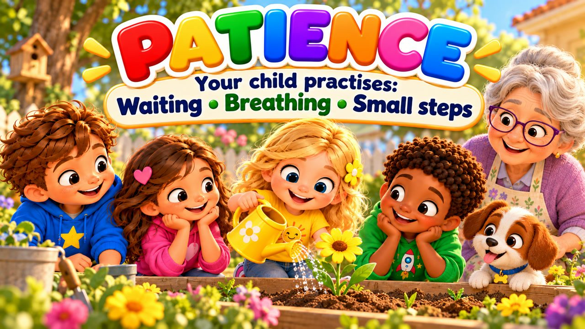
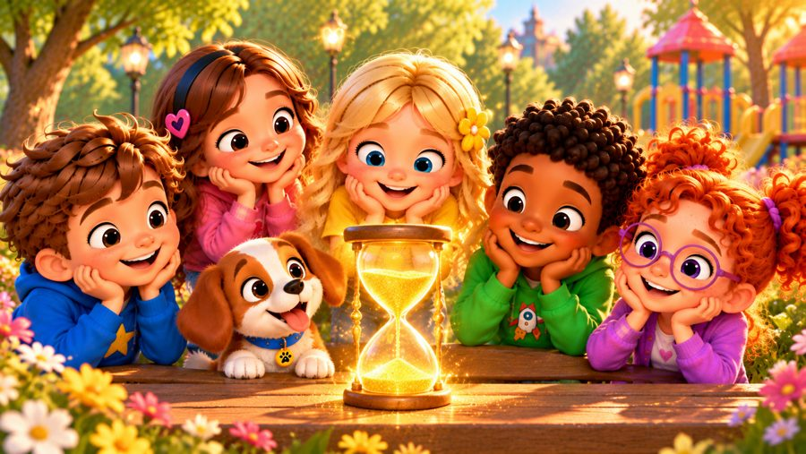
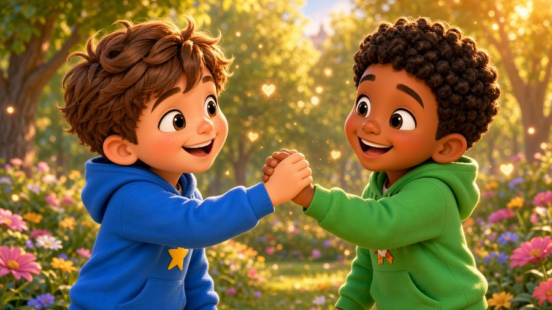
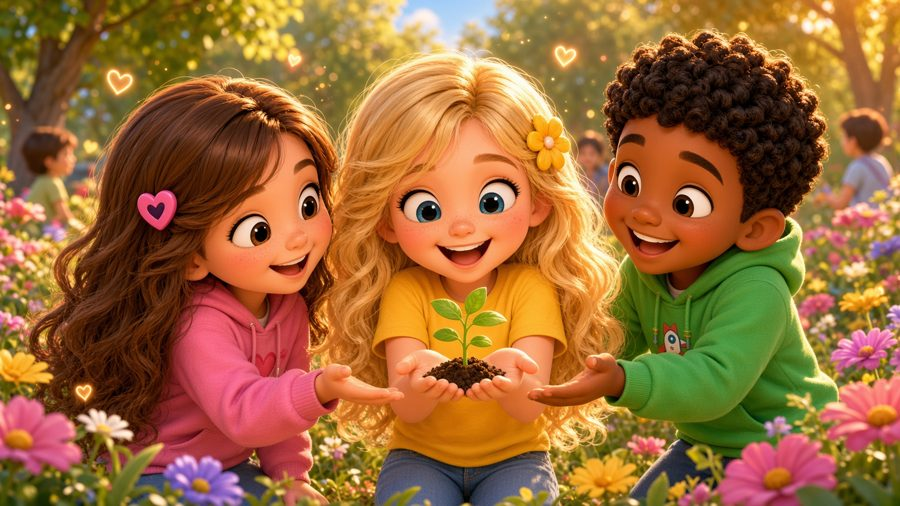
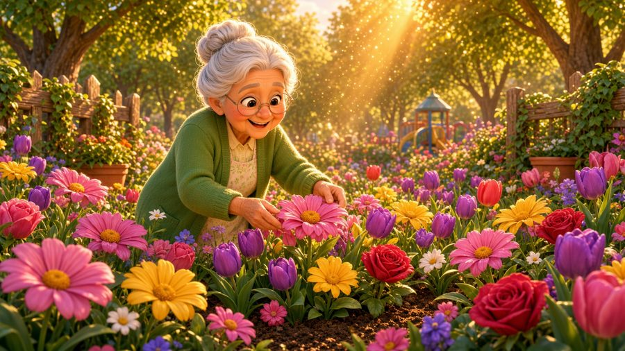

Good Things Take Time
A patience song for kids! 🌱 Sing along with Max, Mia, Jay, Lily, Rosie and Buddy the puppy as they learn that good things take time: waiting for your turn, taking a breath, and going step by step.
"Good Things Take Time" is a sing-along patience song for kids. Max waits his turn at the slide, Lily plants a seed with Grandma Nell and waters it every morning until a yellow flower blooms, Rosie finishes a big puzzle piece by piece — and everyone waits for the cookies to cool. With karaoke lyrics on screen, it's perfect for preschool, kindergarten and early elementary kids (ages 3–8), at home or in the classroom.

▶💡 Why this skill matters: patience
Patience helps children wait their turn, cope with “not yet” and keep working on things that take time. In a world of instant everything, it is a skill worth practising on purpose. Plant a seed, bake something together or count down to an event — and give your child simple tools for waiting, like a calm breath or a song.
👨👩👧 What your child learns
- Waiting for their turn without getting upset
- Calming down with a breath and counting one, two, three
- Going step by step instead of giving up
- Understanding that some things need time to grow
- Waiting can end with something wonderful
💬 Talk about it after the song
- What is something you had to wait for?
- What can you do while you are waiting?
- What helps when waiting feels hard?
🏅 Quiz & Certificate
Watched the song together? Now read each question aloud — your child points to the right picture. Answer all 6 questions and your child earns a printable certificate!
🔒 The name is only used to draw the certificate on your device. We don't save or send anything.
You did it! 🎉
All 6 answers are right! Type your child's name to make the certificate.
🖨️ Free printables
Free for home and classroom use. Print on A4 or Letter paper.
🖼️ Scenes from the song





🎵 More songs


🎤 Lyrics – Good Things Take Time
Is it ready?
Not yet!
Is it my turn?
Not yet!
Do I have to wait?
Just a little!
Some things happen quickly...
Some things need more time!
Max ran over to the slide,
But other kids were there in line.
"I want to go!
I want my turn!"
Then Max remembered
what he'd learned.
He took a breath
and waited there,
Watched his friends
and didn't rush.
One by one,
the line moved through...
And then at last—
"WOO-HOO!"
His turn came too!
Wait a little,
take your time.
Step by step,
and you'll be fine.
I don't need
everything right now...
I can wait,
I know how!
Good things take time!
Good things take time!
I can wait,
and I'll be fine!
Take a breath,
count one, two, three...
Patience helps
the waiting feel easy!
Step by step,
day by day,
Some things grow
along the way!
I don't need it
right away...
Good things take time!
Lily planted one small seed,
Gave it water,
what it needs.
She looked down
the very next day...
"Where's my flower?
Why won't it grow today?"
Grandma Nell smiled:
"Give it time.
Keep it watered,
give it sunshine."
Every morning
Lily came...
Until a little green sprout
popped up one day!
"Look! Look!
It's growing!"
A little later,
up it grew...
And soon a bright
yellow flower bloomed!
Wait a little,
take your time.
Step by step,
and you'll be fine.
I don't need
everything right now...
I can wait,
I know how!
Good things take time!
Good things take time!
I can wait,
and I'll be fine!
Take a breath,
count one, two, three...
Patience helps
the waiting feel easy!
Step by step,
day by day,
Some things grow
along the way!
I don't need it
right away...
Good things take time!
Rosie had a puzzle
spread across the floor.
She tried one piece,
then tried some more.
"It doesn't fit!
Where can it go?"
She slowed right down
and searched each row.
Piece by piece,
she found the way...
Until the final piece
clicked into place!
And in the kitchen,
cookies smelled so sweet.
"Can we eat them now?"
"Not yet!"
So while they cooled,
the friends all waited...
Then—
"YUM!"
It was worth the wait!
Waiting for your turn?
I CAN WAIT!
Something growing?
GIVE IT TIME!
Puzzle taking longer?
STEP BY STEP!
Cookies cooling?
NOT YET!
Feeling impatient?
TAKE A BREATH!
Do I need it right now?
NO, I CAN WAIT!
And what do good things take?
TIME!
Some things take
a minute.
Some things take
a day.
Some things take
many little steps
along the way.
Waiting doesn't mean
nothing is happening.
Sometimes...
things are growing.
Sometimes...
I'm learning.
Sometimes...
my turn is getting closer!
Good things take time!
Good things take time!
I can wait,
and I'll be fine!
Take a breath,
count one, two, three...
Patience is
a skill for me!
Wait my turn!
Take my time!
Keep on going—
I'll be fine!
Seeds can grow!
Skills can too!
There's so much
that time can do!
Step by step!
Day by day!
I don't need it
right away!
Good things...
good things...
GOOD THINGS TAKE TIME!
Not yet?
That's okay!
I'll keep going
day by day.
Take a breath...
give it time...
Good things take time!